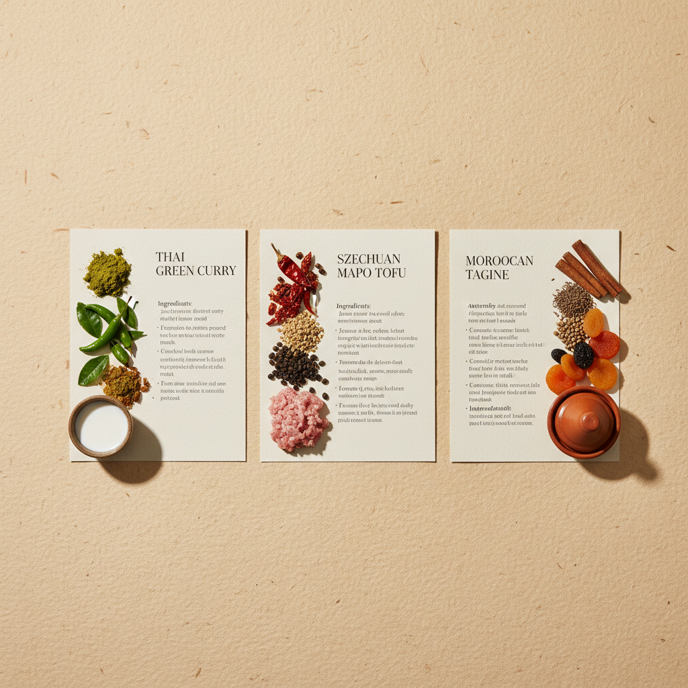

Pinchbox Print Hub
Collectible 4" x 6" Recipe Cards
Our recipe cards are precision-calibrated for high-fidelity printing. Use these high-resolution layouts for manufacturing reference, or print them directly to heavy cardstock on a home printer.

Aesthetic editorial overview of Pinchbox collectible physical cards
Card Front (Editorial Side)
Card Back (Interactive Instructions)
Print & Manufacturing Directions
Ready to print this card? Click below to open your system's print dialog. For optimal physical feel, we recommend setting your printer to 4x6 Photo Paper / Index Card size and printing double-sided on 350gsm Matte Cardstock.